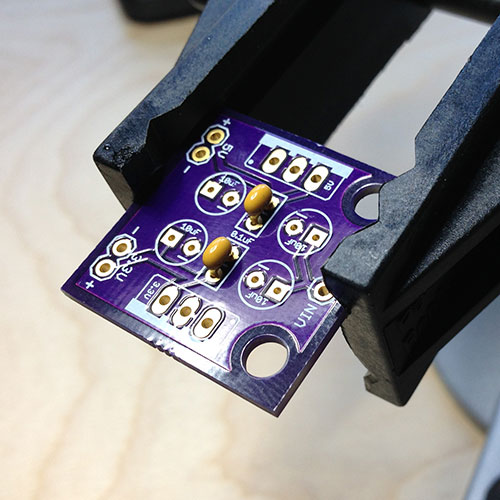
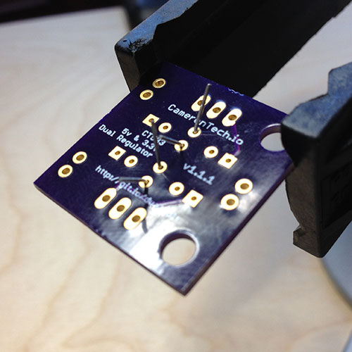
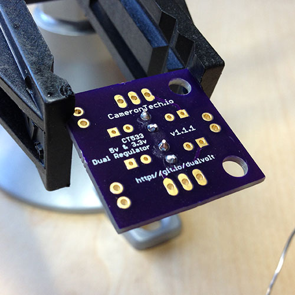
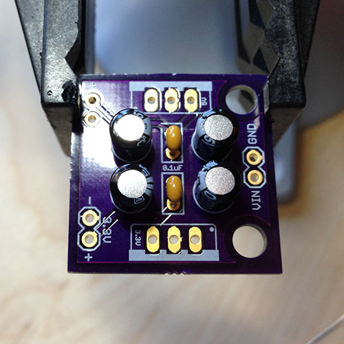
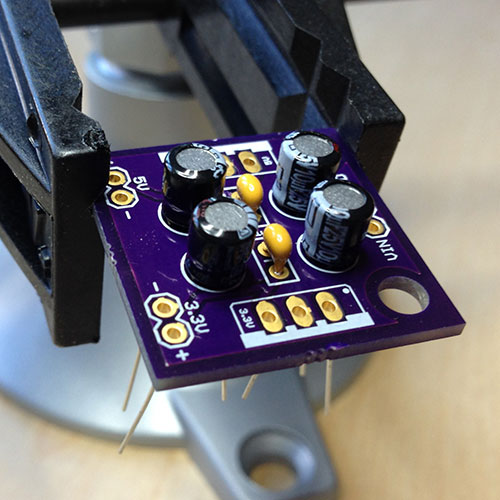
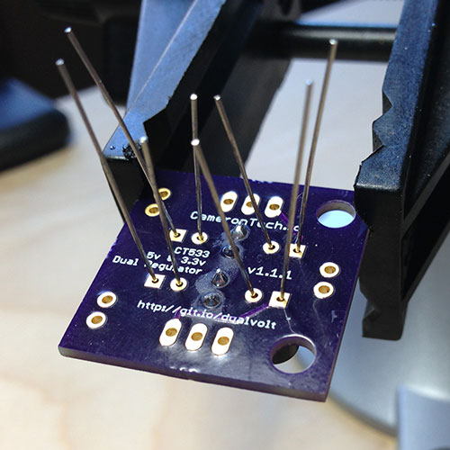
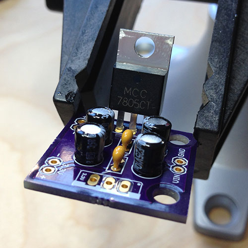
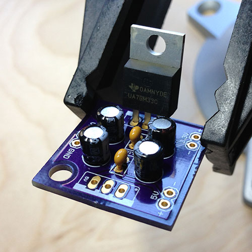
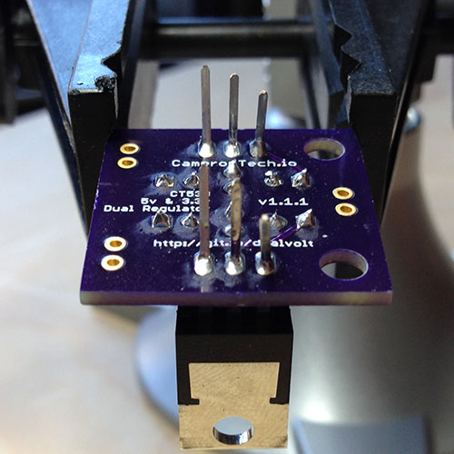

When you absolutely, positively need both 5v and 3.3v right now.
The Dual Regulator is just that: two regulators in one package. I found that I need to supply both 5v to an Arduino (without its own voltage regulator) and 3.3v to attached sensors at the same time. I couldn't find any products out there that would do that for me, so I made one.
Want to get your hands on one? You can do that right here: http://store.camerontech.io/products/dual-regulator
Make sure that you have all the required parts. If anything is missing send an email to support@camerontech.io and let me know.
We're going to start by soldering in the smallest components first. Put the two 0.1µF capacitors through the center holes of the board and bend the pins a bit so they'll stay put when you flip the board over. Go ahead and solder those in place and clip off the excess wire.

Next comes the 10µF capacitors. It's very important that you install these in the correct direction or they'll be ruined once you turn on the power. The circles printed on the board have a tiny - (minus) sign on them if you look closely (it's the round pin hole, not the square one). The short leg of the capacitor should go through this hole. Place all four through the holes first and then double check: the capacitor body has a lighter stripe on the same side as the sort leg. All of the stripes should face inwards towards the middle of the board. If everything looks good, get to soldering. Trim off the extra legs when you're done.

Now the important parts: the regulators. You'll place these so that the black bodies face each other towards the center of the board and the silver backings (heatsinks) face outwards. On the board you'll see a tiny "5v" and "3.3v" inside the boxes for the regulators. Make sure you put the regulator that has "7805" printed on it into the 5v box and the regulator that has "33" printed on it into the other box. (If you get these backwards it won't actually be the end of the world, you just need to remember that the output pins labeled "5V" and "3.3V" are backwards.) Once you have them in place you'll probably want to bend the legs a bit to get them to stay there. If you're particularly fastidious about having everything be plumb and square when you're done one trick is to solder one leg and while holding the soldering iron to keep the solder liquid, reach below and move the regulator until it's in the position you want. Remove the soldering iron but keep holding the regulator. After a couple of seconds the solder will harden and the regulator will be right where you want it. Clip off the extra length of legs.

If you want to mount this thing in a breadboard then now's the time to clip your header pins into groups of two and solder them in the remaining holes, long ends of the pins facing down. If you'd like the board to sit on a table and be able to plug jumpers into them from the top, mount the header pins with the long ends facing up. Or, if you just want to hardwire wires right to the inputs and outputs, feel free!
Having trouble? Shoot me an email at support@camerontech.io and I'll do my best to help you out!
The Dual Regulator is open source hardware under the Creative Commons BY-SA 3.0 license. This means the schematics and board layouts are available for you to do what you like. You can get the board fabricated yourself or even modify the design and sell it if you want. I only ask that you then also open source your design and mention where you got the originals.